ZD
Zabdiel Dewar
Team CaptainLeads strategy, coordinates subteams, and represents the team at competitions.
Visionary Sparks is a school-affiliated robotics team at Halifax County Early College High School, built around curiosity, teamwork, and the belief that student engineers can create real change through robotics, outreach, and leadership.
Visionary Sparks (FRC #11353) is a student-led robotics team united by curiosity, grit, and the belief that today's student engineers will shape tomorrow's world.
Founded with a mission to make cutting-edge STEM education accessible and exciting, we compete in the FIRST Robotics Competition, where students work alongside mentors and industry professionals to design, build, and program competition robots in only six weeks.
But we are more than our robot. We mentor younger students, host STEM outreach events, and foster a culture where every member, regardless of experience, can find their spark.
We look ahead. Every design decision is made with the future in mind.
We hold ourselves to high engineering and professional standards.
We compete hard, respect everyone, and lift others up.
We measure success not only in trophies, but in lives we inspire.
FRC is the varsity sport of the mind. Each January, teams receive a new challenge and a kit of parts. In roughly six weeks, they build a 120-pound robot capable of competing on a professional field. Along the way, students gain engineering experience, teamwork habits, and connections to leading STEM organizations.
Driven students, dedicated mentors, and specialists across every subteam all working toward one goal.
Public team profiles, names, and images are intended to remain subject to school or organizational review and may be updated or removed to honor media-release, directory-information, or privacy requirements.
Leads strategy, coordinates subteams, and represents the team at competitions.
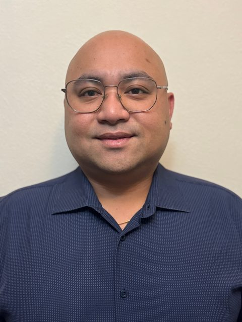
Guides the team, oversees projects, and supports a positive, productive learning environment.

Supports the team by sharing expertise and helping students develop engineering, strategy, and teamwork skills.
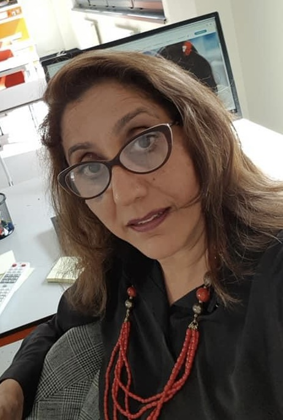
Supports the team by sharing expertise and helping students develop engineering, strategy, and teamwork skills.
Architects robot software in Java and focuses on autonomous routines, vision systems, and AprilTag tracking.

Handles PID tuning, sensor integration, and driver assistance systems.
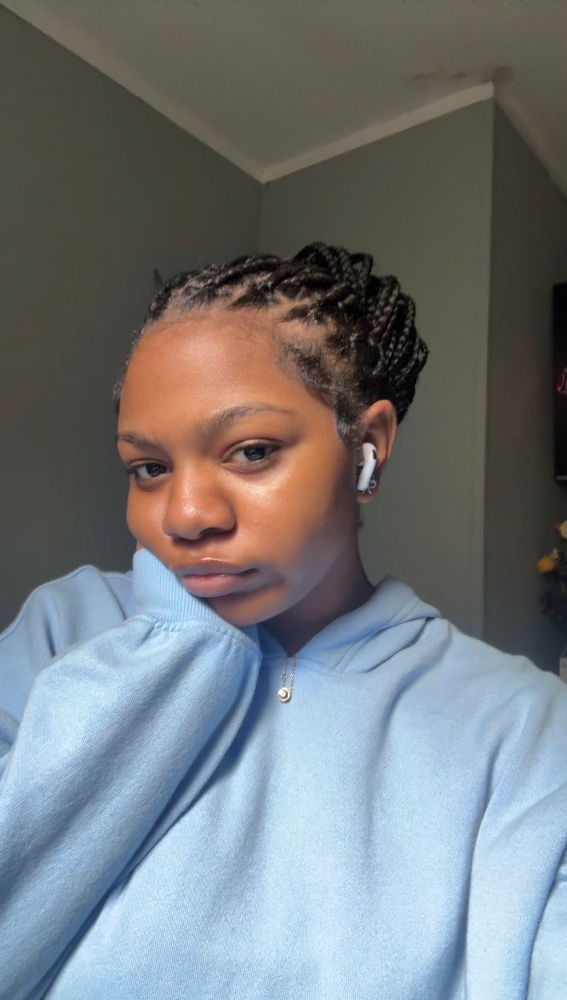
Supports software development and helps maintain the robot's technical systems.
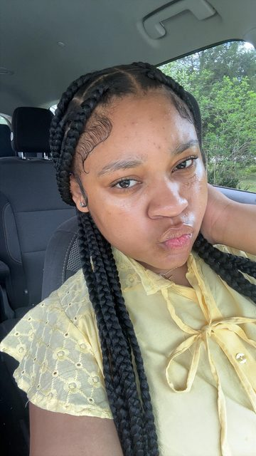
Assists with coding and software tasks that support the robot and the team's workflow.
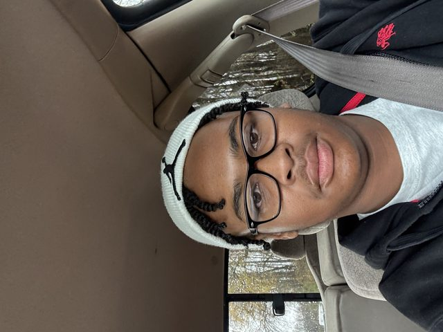
Leads CAD design and fabrication with experience in printed and machined parts.
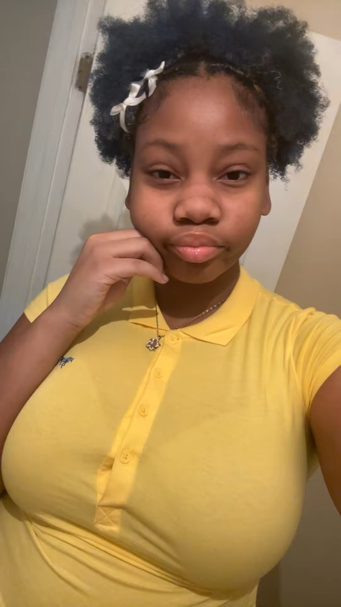
Leads robot design and build, oversees engineering strategy, and mentors teammates.
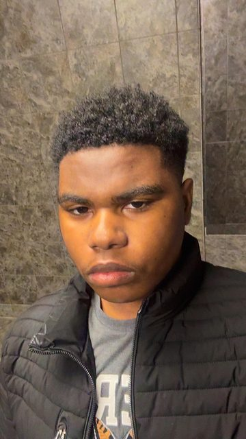
Designs and builds robot components while supporting mechanical and electrical work.
Supports component build work and contributes to the team's engineering goals.
Helps design, assemble, and refine robot systems during build and competition prep.
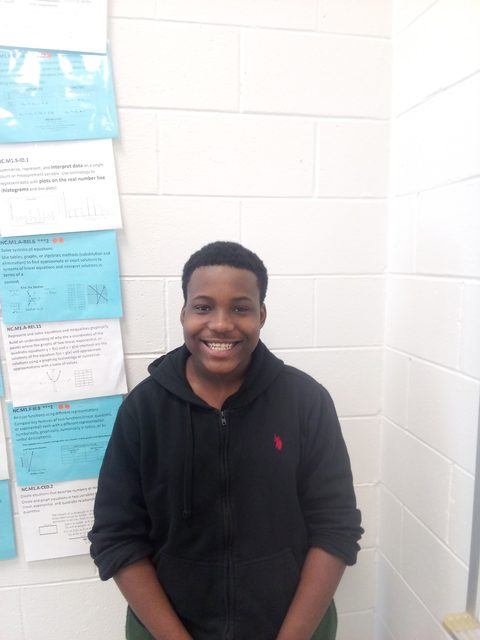
Coordinates community events, school visits, and mentorship opportunities.
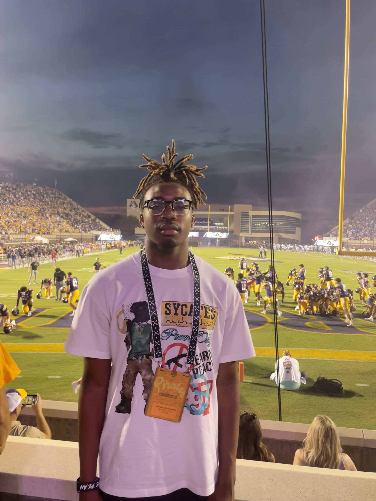
Manages social content, photography, and season documentation.
Supports team communications and public outreach around events and achievements.
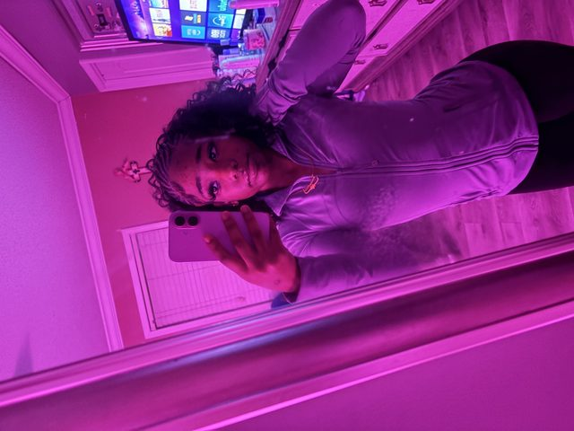
Helps promote team events, share updates, and support public-facing communications.
Helps promote team events, share updates, and support public-facing communications.
Guides match strategy and keeps communication sharp during competition.

Operates the robot during matches and adapts to field conditions in real time.
Controls scoring mechanisms and helps execute offensive strategy during matches.
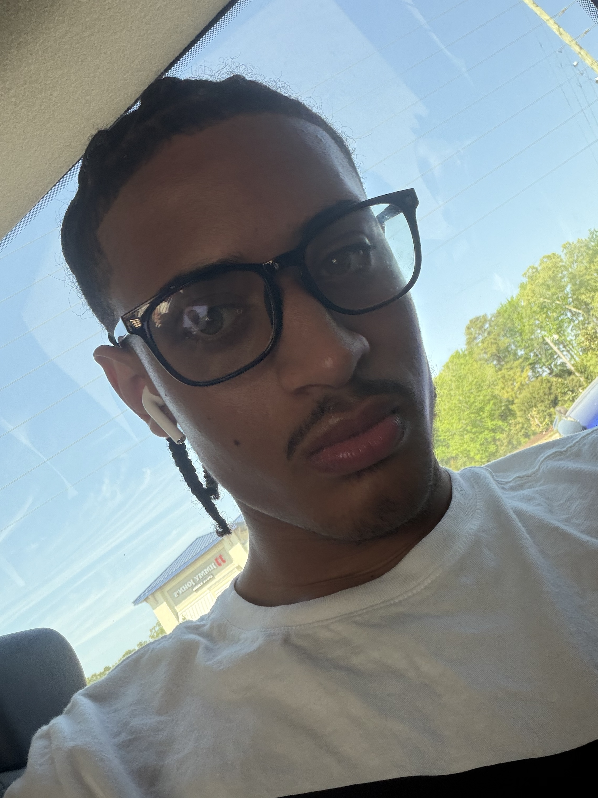
Supports match play by handling game pieces and helping the team maintain scoring rhythm.
Works alongside the drive team to execute game-piece handling responsibilities during matches.
Maintains, repairs, and fine-tunes robot systems throughout competitions.
Keeps the robot ready between matches through troubleshooting and fast mechanical support.
FIRST is about more than winning. Our outreach programs bring STEM to communities that need it most.
We visit local schools with hands-on robotics demonstrations and age-appropriate STEM workshops.
We partner with local organizations to run engineering and coding workshops for girls in grades 5 through 8.
Off-season workshops welcome local students into our build process to learn soldering, programming, and robotics basics.
We exhibit at science expos and community events to share the robot and tell the story of the season.
We connect robotics with broader community impact through sustainability-minded projects and volunteer work.